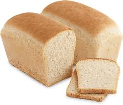
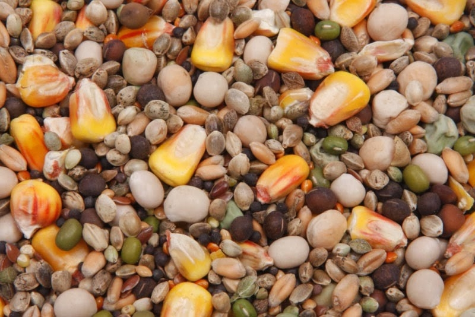

Хлеб
Рис и арахис
 
Молотый хлеб. Просто хлеб в своем обыкновенном виде, размоченный и выжатый, употреблялся как прикормка давно и везде, особенно при ловле лещей. В прикормочных смесях применяется в молотом виде белый хлеб, который не имеет склонности к быстрому скисанию. Наилучшим является хлеб из грубомолотой муки. Высушенный и перемолотый он придает муке беловатый цвет. Тот же цвет остается при замачивании. В прикормках используется как основной компонент.Применение: Для ловли со дна и в полводы. Результативен для всех рыб спокойного жора, особенно попадает под вкусовые пристрастия лещей. Прикормки с молотым хлебом необходимо замачивать задолго до употребления и повторять это действие несколько раз. Не рекомендуем в целях облегчения себе работы сразу добавлять большое количество воды, поскольку это приведет только к тому, что хлеб склеится, и в нем образуются комки, которые потом не удается разрушить.
Рис. Есть много популярных сортов этого зерна из отдаленных регионов с теплым и влажным климатом. С точки зрения рыболова, среди них нет большой разницы, но особое внимание заслуживает их цвет. Некоторые с удачей используют целое зерно риса. Однако чаще применяют полученную из него муку с большим содержанием крахмала или рисовые хлопья. Изредка применяют рисовый отвар. В прикормке используется как вяжущий и объемный компонент.
Применение: Во всех светлых донных и поверхностных прикормках. В сухом виде белого цвета, замоченный - грязно-белый. Целые зерна более питательны, чем мука, которой крупная рыба не интересуется, а только уклейка и другая мелочь. В отличие от рисового отвара имеет небольшие лепящие свойства.Арахис. Бразильское тропическое растение из семейства бобовых. Стручок созревает под землей. Из семян, обычно называемых земляными орешками, жмут масло. В продаже арахис встречается во многих видах. В прикормках используется главным образом два продукта: чистый (молотые орешки) - пахнущий и жирный (до 45% жира) насыщающий, а также коричневого цвета - обезжиренный шрот после выжимки (остается 1-2% жира), менее сытный, худший. В прикормках используется как возбуждающий (приманивающий) компонент.
Применение: Молотые орешки применяют для донных прикормок. Особенно эфективны на плотву и леща, при этом привлекают крупную рыбу. Мука имеет насыщающие свойства. По прошествии времени сильное лепящее действие. В сухом виде светло-коричневый, в намоченном виде коричневый. Много не добавлять: 10-20%.